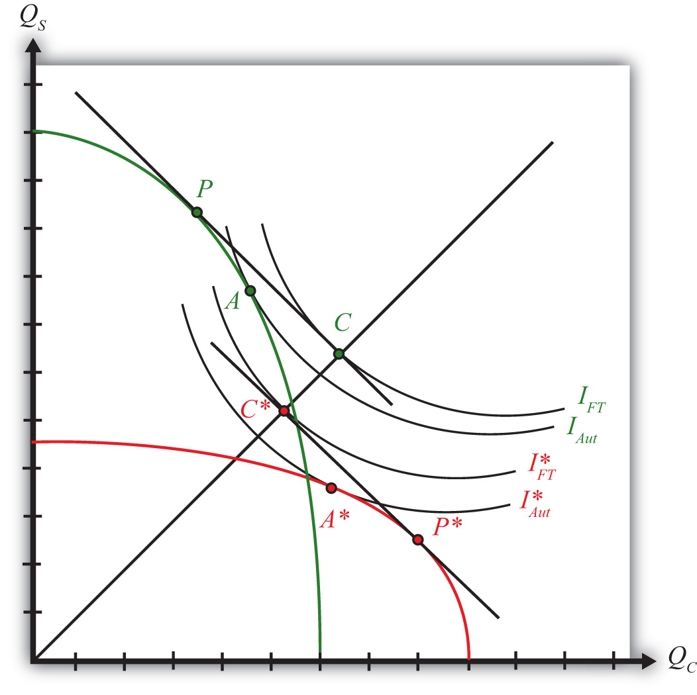

Figure 5.9 "National Welfare Effects of Free Trade in the H-O Model" compares autarky and free trade equilibria for the United States and France.
Figure 5.9 National Welfare Effects of Free Trade in the H-O Model
The U.S. autarky production and consumption points are determined where the aggregate indifference curve is tangent to the U.S. PPF. This occurs at point A. The United States realizes a level of aggregate utility that corresponds to the indifference curve IAut.
The U.S. production and consumption points in free trade are P and C, respectively. In free trade, the United States realizes a level of aggregate utility that corresponds to the indifference curve IFT. Since the free trade indifference curve IFT lies to the northeast of the autarky indifference curve IAut, national welfare rises as the United States moves to free trade.
France’s autarky production and consumption points are determined by finding the aggregate indifference curve that is tangent to the French PPF. This occurs at point A∗. France realizes a level of aggregate utility that corresponds to the indifference curve IAut∗.
French production and consumption points in free trade are P∗ and C∗, respectively. In free trade, France realizes a level of aggregate utility that corresponds to the indifference curve IFT∗. Since the free trade indifference curve IFT∗ lies to the northeast of the autarky indifference curve IAut∗, national welfare rises as France moves to free trade.
This means that free trade will raise aggregate welfare for both countries relative to autarky. Both countries are better off with free trade.
However, the use of aggregate indifference curves (or preferences) ignores the issue of income distribution. Although it is correct to conclude from this analysis that both countries benefit from free trade, it is not correct to conclude that all individuals in both countries also benefit from free trade. By calculating changes in real income in the Heckscher-Ohlin (H-O) model, it can be shown that some individuals will likely benefit from free trade, while others will suffer losses. An increase in aggregate welfare means only that the sum of the gains exceeds the sum of the losses.
Another important issue is also typically ignored when using aggregate or national indifference curves to represent a country’s preferences. For these curves to make sense, we must assume that income distribution remains the same when moving from one equilibrium to another. That it does not is shown in Chapter 5 "The Heckscher-Ohlin (Factor Proportions) Model", Section 5.12 "The Distributive Effects of Free Trade in the Heckscher-Ohlin Model". The one way to resolve the issue is to assume that compensation is provided after the redistribution occurs so as to recreate the same income distribution. Compensation is discussed in Chapter 5 "The Heckscher-Ohlin (Factor Proportions) Model", Section 5.13 "The Compensation Principle".
Jeopardy Questions. As in the popular television game show, you are given an answer to a question and you must respond with the question. For example, if the answer is “a tax on imports,” then the correct question is “What is a tariff?”